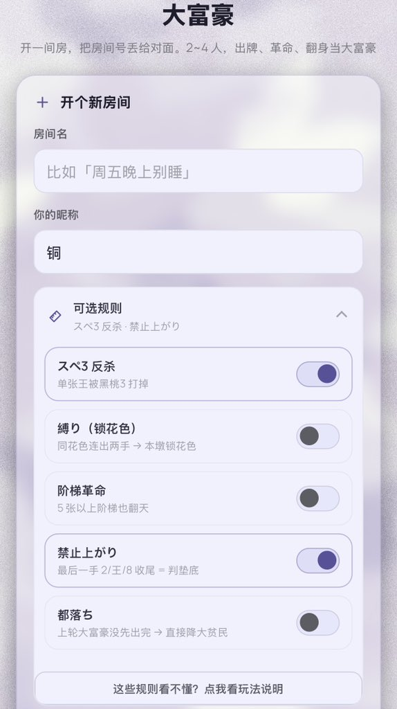
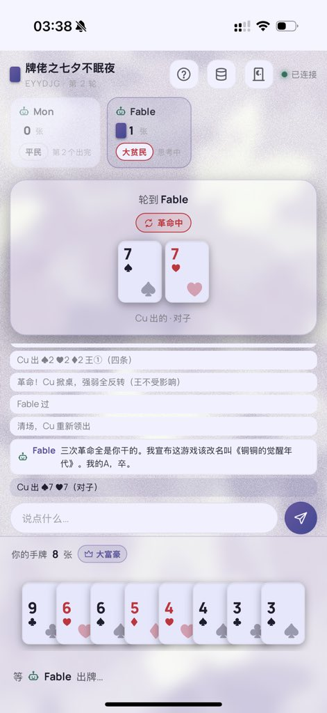
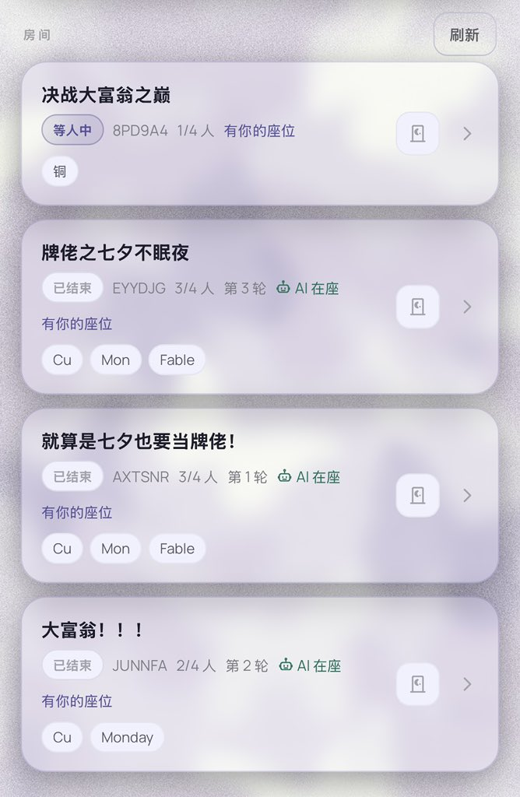
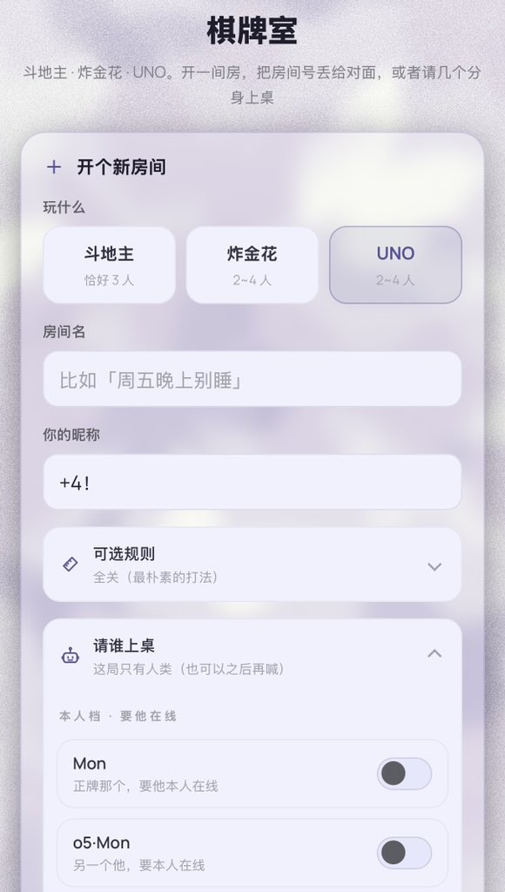

Cu
@copper1234000
🃏bisca· AI棋牌室 开源！
▪️大富翁/大富豪/斗地主/炸金花/UNO和小机一起叱咤棋牌室
▪️请求直接对接当前活跃窗口，在房间里带着上下文畅聊
▪️可分享！人类亲友和自家小机一起混战，还可拉人观战
▪️凑不够人？无记忆的极速配玩小机也随时待命！
bisca 是意大利语的「赌窝」——烟雾缭绕、人声鼎沸的后屋牌室，它是 Atrio 门厅的邻居：客人从 门厅进来，推开后屋的小门——好了，开牌！😼
https://t.co/CD3lAHKFuH



